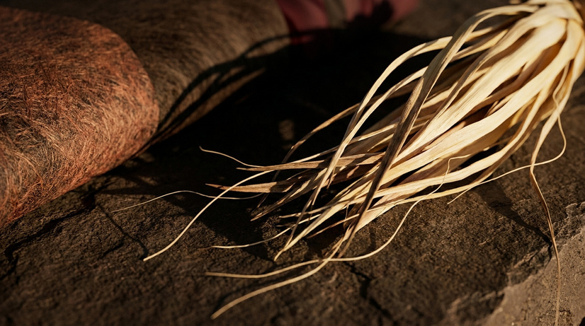
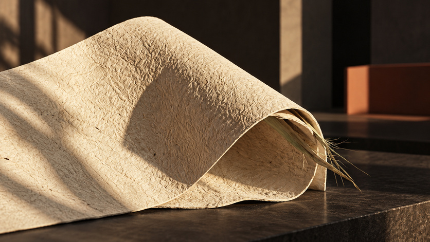
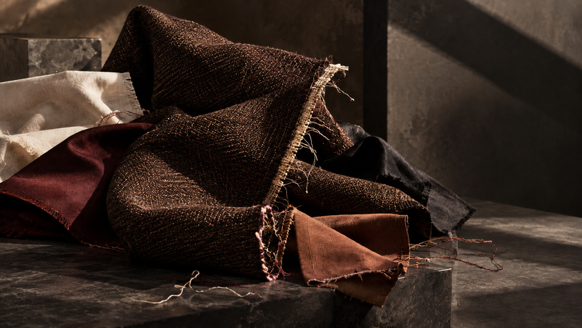
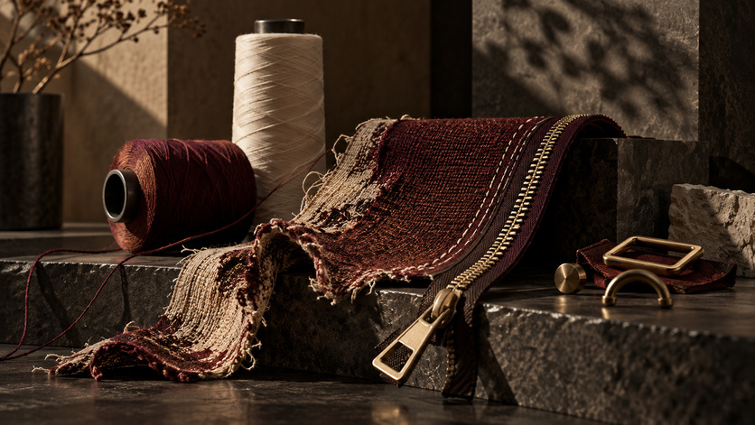
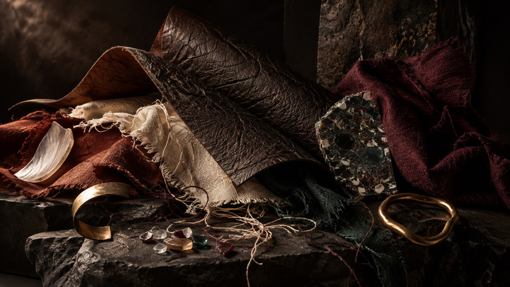
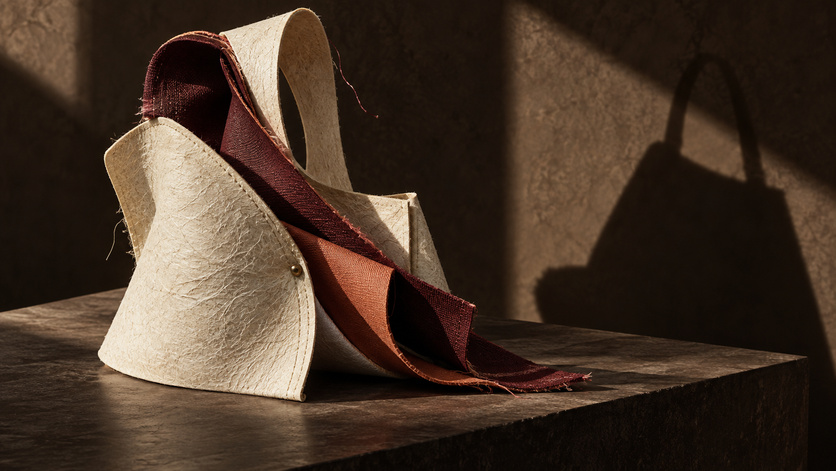

Alquimia · Diseño que transforma
SEE WHAT
OTHERS
DON'T.
Lo que otros descartan. Nosotros lo transformamos.
Descubre AlquimiaHero Film · preparado para incorporar la pieza audiovisual final.
Una nueva forma de mirar
¿Y si lo que ya existe pudiera convertirse en algo completamente diferente?
Alquimia nace de una idea sencilla: cambiar la mirada sobre aquello que ya existe para descubrir posibilidades que todavía no vemos.
Descubre la transformaciónDe la materia al diseño
LO QUE YA EXISTE
PUEDE TENER UNA
NUEVA HISTORIA
OrigenTransformaciónRecuperaciónConstrucciónIdentidadDiseño






Colección
HISTORIAS QUE
TOMAN FORMA
Diseño contemporáneo. Materiales con una historia.


Nuestra historia
DISEÑO CON PROPÓSITO
Detrás de cada pieza existe una mirada que observa, selecciona, transforma y decide. El resultado es un diseño contemporáneo construido alrededor de una nueva historia.
Conoce nuestra historiaParticipa
FORMA PARTE DE LA TRANSFORMACIÓN.
Descubre nuevas piezas, historias y lanzamientos de Alquimia antes que nadie.
Únete a la lista de espera